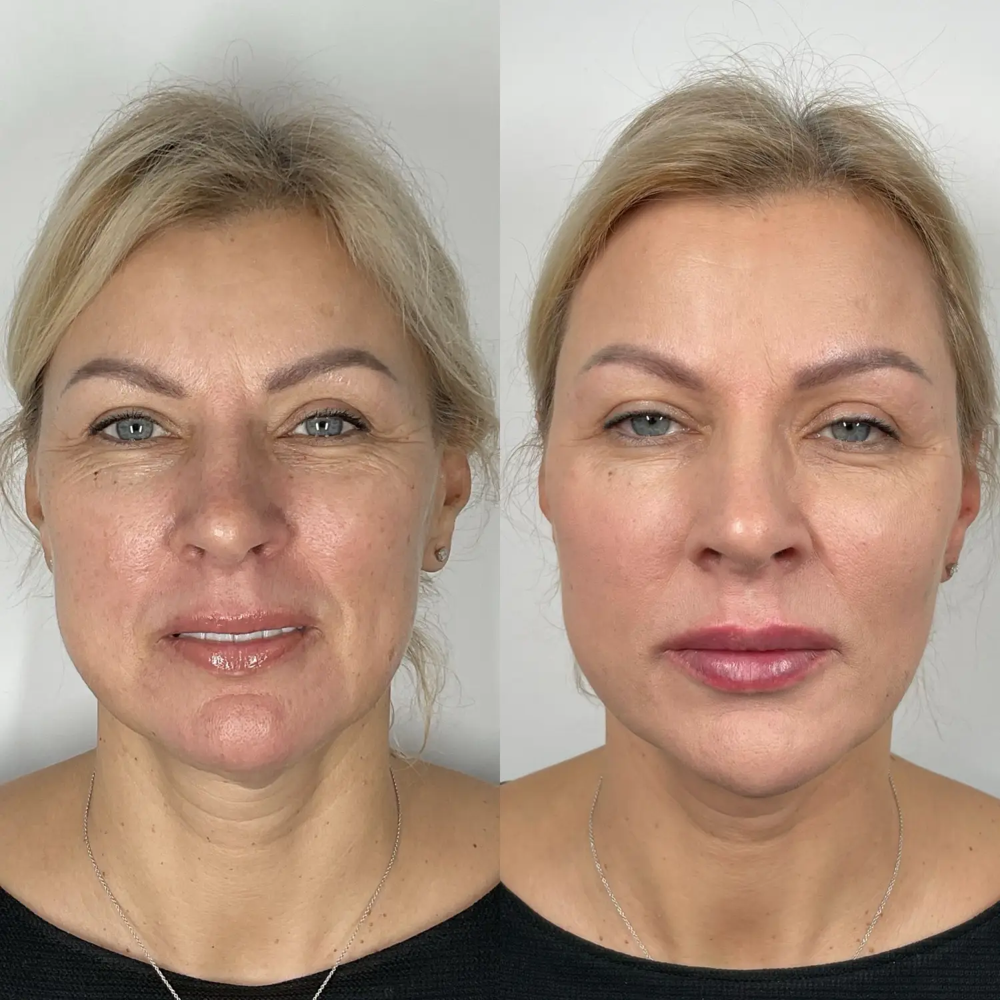
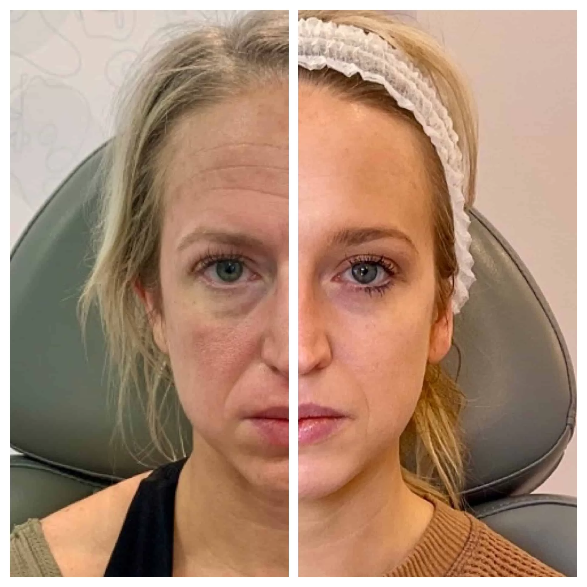
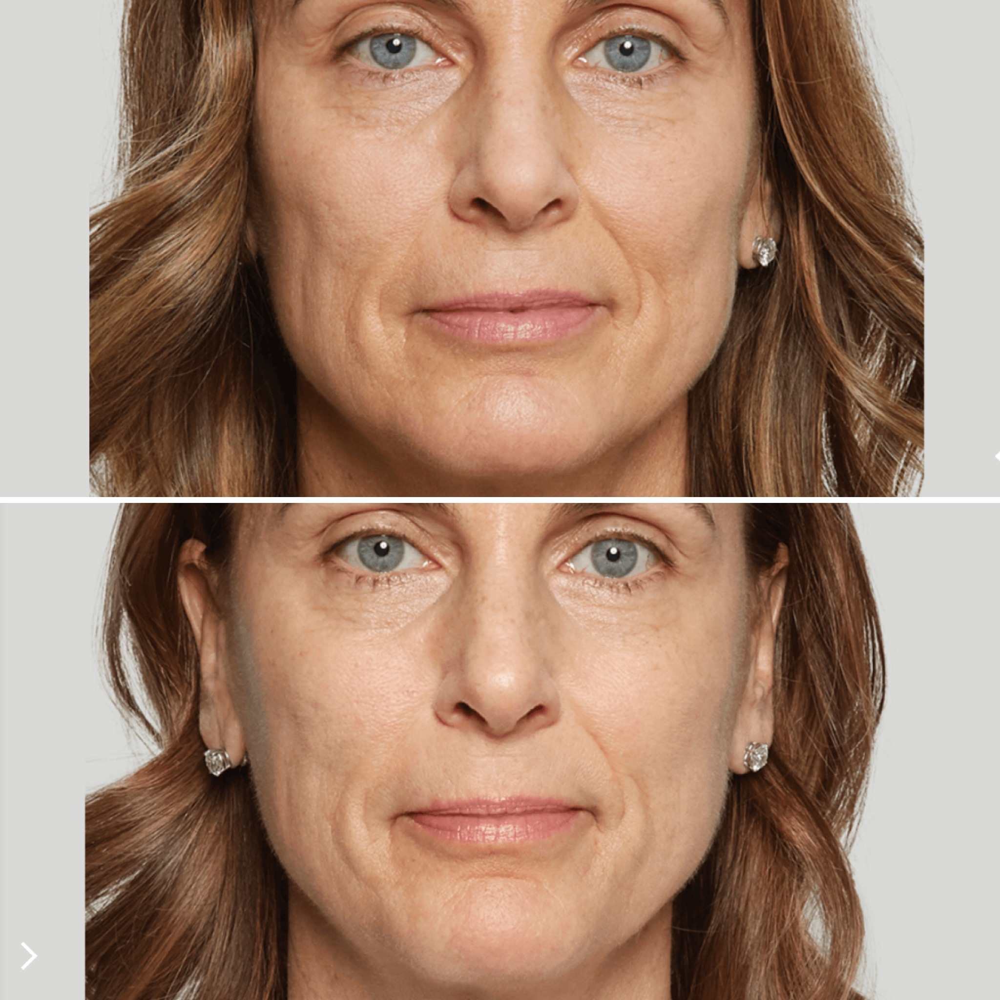
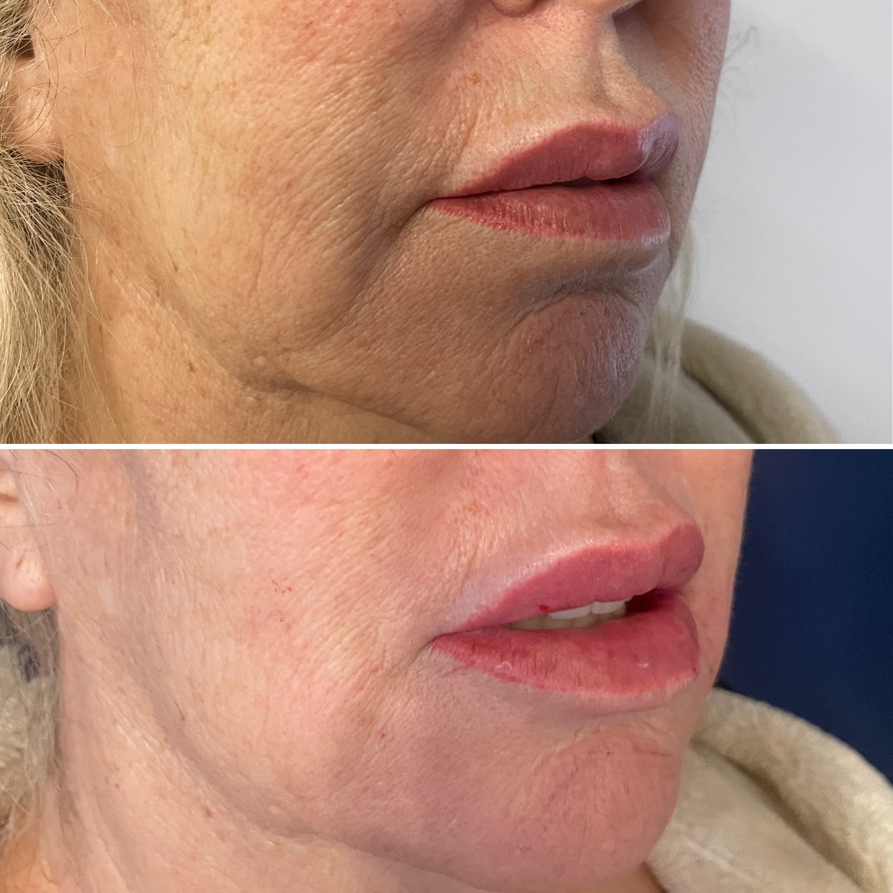
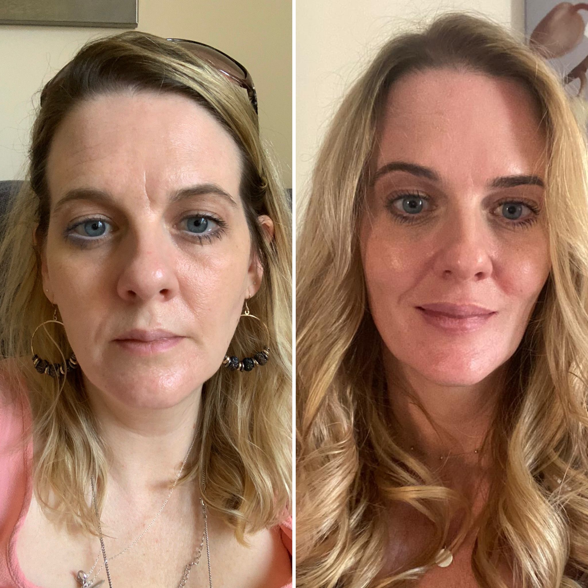
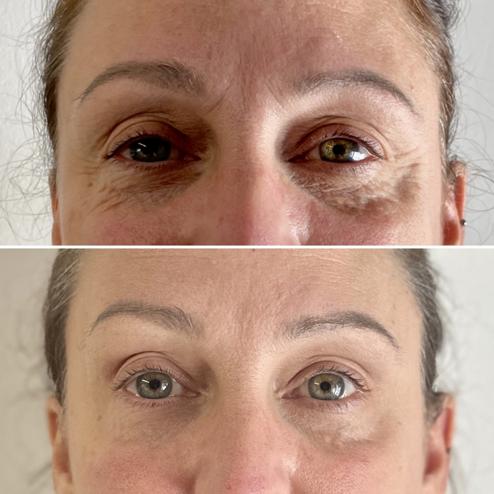
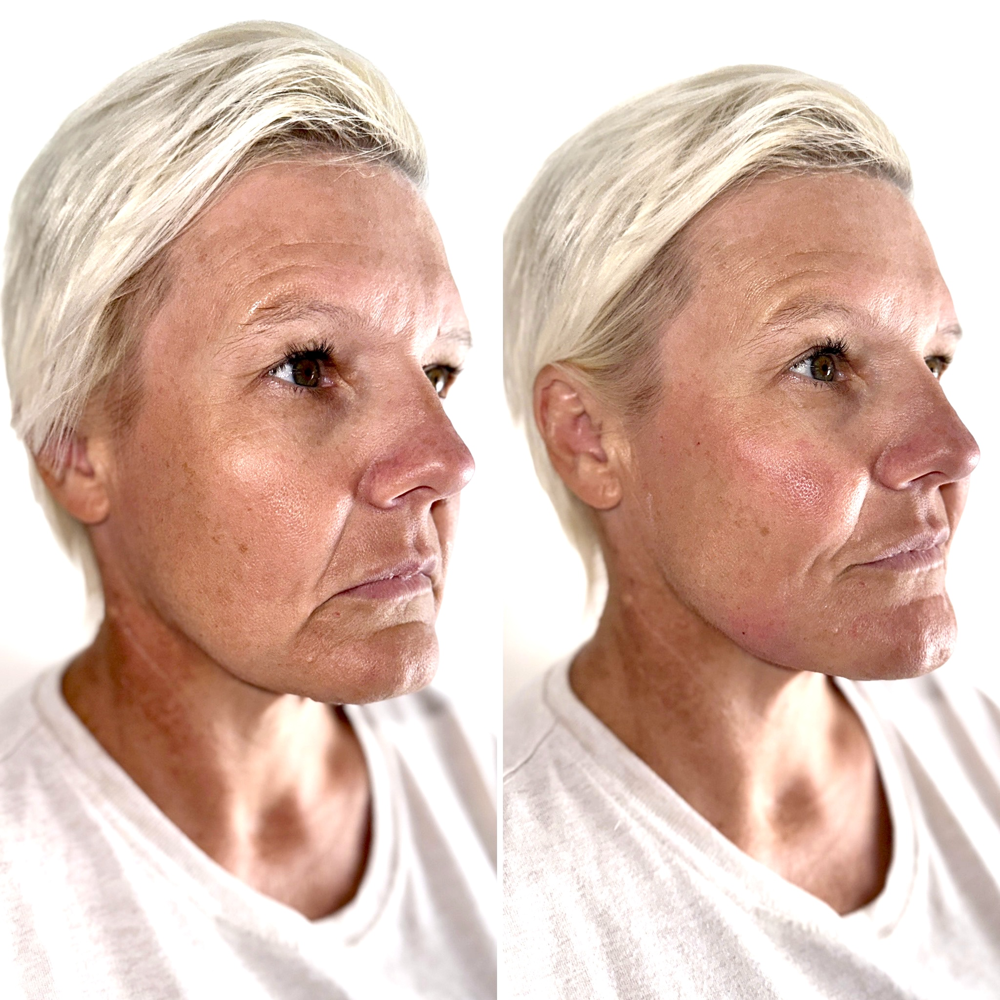
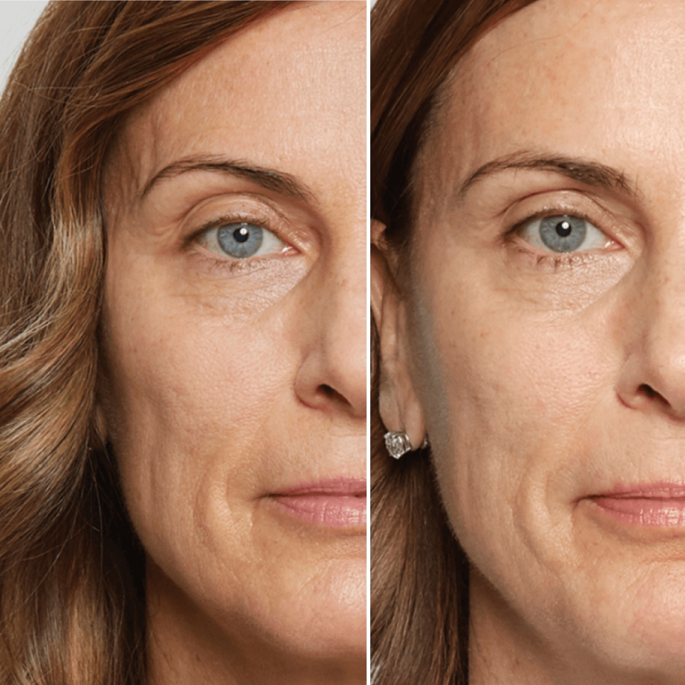
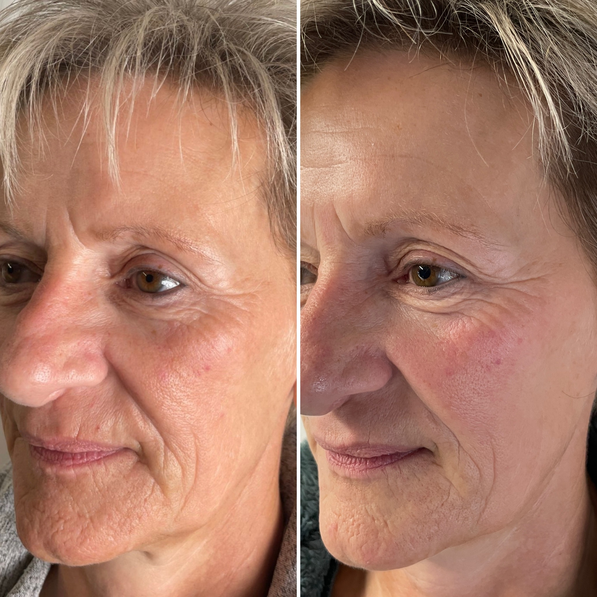

Collagen depletes
From your thirties, you lose 1% of your collagen each year. Skin thins. Bounce-back disappears.

A collagen-stimulating, medically-led rejuvenation that lifts, firms and refines your face — naturally.
Stand-alone £25 consultation · No pressure, ever
Tired eyes. A softer jaw. A face that's lost a little of its lift. You don't want filler. You don't want frozen. You just want to look well again.
From your thirties, you lose 1% of your collagen each year. Skin thins. Bounce-back disappears.
Mid-face fat pads slide downward. Cheeks flatten, temples hollow — and you start to look "tired".
Bone density reduces. Without that underlying architecture, no skincare or filler can restore real shape.

Real Patient ResultSculptra (poly-L-lactic acid) works with your body — gently signalling your skin to produce its own new collagen over several months. Rather than "plumping" an area like a traditional filler, it rebuilds the deep foundations of your face.
The result: firmer, fresher, more sculpted skin — because the lift is genuinely your own.
Book Your Consultation →Both are injectable. That's where the similarity ends. Understanding the difference is the single most important thing if you want natural-looking results.
Activates your skin's own collagen production from within.
Subtle changes over weeks — no sudden, obvious "before & after".
Firmer, smoother, more luminous — a real "lit from within" glow.
Rebuilds the deep scaffolding — lifting cheeks, refining the jawline.
Unlike traditional filler — the result always looks unmistakably you.
Long-lasting rejuvenation — exceptional value over time.
From your first consultation to your final result, you're guided every step of the way.
A calm, unhurried assessment of your face and your goals. Honest advice, a personalised plan — no pressure. Stand-alone £25 fee.
Typically 2–3 gentle sessions, 4–6 weeks apart. Sculptra is precisely placed by Nafisa. Minimal downtime.
Collagen rebuilds over 3–6 months. Skin gradually firms, contours lift and the rejuvenation lasts up to 2 years.
Book a private £25 consultation with Nafisa Mughal. No pressure — just an honest, expert assessment of whether Sculptra (or something else entirely) is the right next step for your face.
Genuine transformations — softer, firmer, more rested. Notice the lift through the cheek, the smoothing of fine lines, the return of natural luminosity.
Softer forehead lines, brighter under-eye area and a smoother overall complexion.

Restored fullness across the cheeks and a softer, more defined lower face.

A subtle filling of the nasolabial folds and a more relaxed, rested expression.

Visibly firmer, smoother skin with a healthier, brighter tone overall.

Restored support beneath the eyes — eyes look brighter and more open.

Lifted cheek and re-defined jawline — without any change to underlying features.

Lower face lines reduced and skin appears noticeably firmer through the cheek.

An overall softening — same face, just looking like the best version of herself.
Restored structure throughout the face — the kind of result that makes people ask if you've been on holiday.
All images shown are real patient results. Individual results vary, and your personalised treatment plan, expected outcome and number of sessions will be discussed in detail during your consultation.
For 15 years, Nafisa has dedicated her career to honest, medically-led aesthetics. A dental professional with deep expertise in head and neck anatomy — and a respected aesthetics trainer who teaches other practitioners — her approach is precise, considered and quietly reassuring.
Nafisa is the practitioner women come to when they want to look better, not different. Every treatment plan is tailored, conservative and built around your facial anatomy — never a one-size-fits-all approach.
Real reviews from real clients of PureMed Aesthetics in Winslow.
"Nafisa is an absolute perfectionist. She took the time to really listen and didn't push anything I didn't need. My face looks fresh and natural — friends keep telling me I look well-rested rather than 'done'. I wouldn't go anywhere else."
"I was nervous about anything injectable but Nafisa's medical background and calm manner put me completely at ease. The results speak for themselves — subtle, beautiful and exactly what I asked for. A truly professional clinic."
"Having tried other clinics and felt rushed or pushed into things, finding PureMed has been a revelation. Nafisa explains everything in detail and her honesty is so refreshing. My skin has never looked better."
"I've been to Nafisa for several treatments now and I trust her completely. She is highly skilled, meticulous and her aesthetic eye is excellent. The clinic itself is beautiful, calm and immaculately clean."
"What I love most is that nothing looks obvious. People just tell me I look really well. Nafisa's knowledge of facial anatomy is on another level — you can feel that you're in genuinely safe, expert hands."
"After my consultation Nafisa actually recommended I do less than I'd asked for, which I'd never had before. The result was perfect — completely natural and lasted beautifully. Honest, talented and lovely."
If your question isn't answered here, message Nafisa directly on WhatsApp — she'll always reply personally.
A confidential, unhurried consultation with Nafisa Mughal — at the heart of Winslow, Buckinghamshire. A stand-alone £25 fee for an honest assessment and personalised treatment plan.